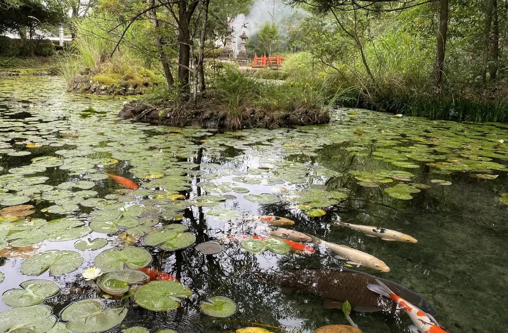
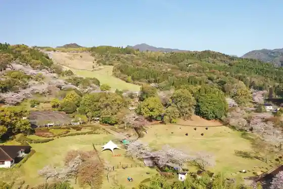
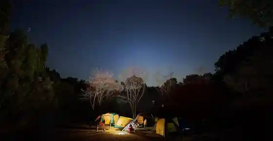
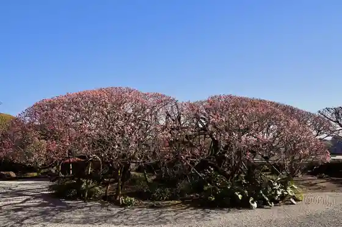

Kunitomi, Miyazaki
Kunitomi · Miyazaki
Kunitomi
Highlighted on the Miyazaki map.

Sights
Hokke Gaku Park

Suwa Shrine
Ariina Kunitomi
Hokke Gaku Koen Campground

Manpukuji

Miyazaki Gorufu Kurabu
Otsubo no Ippon Sakura